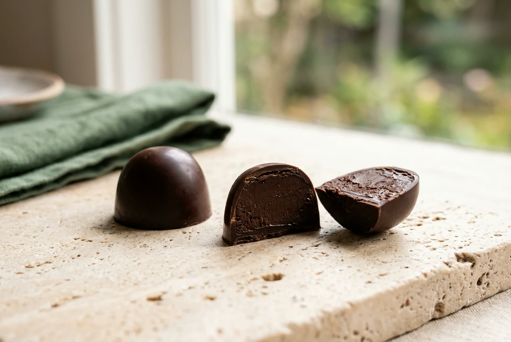
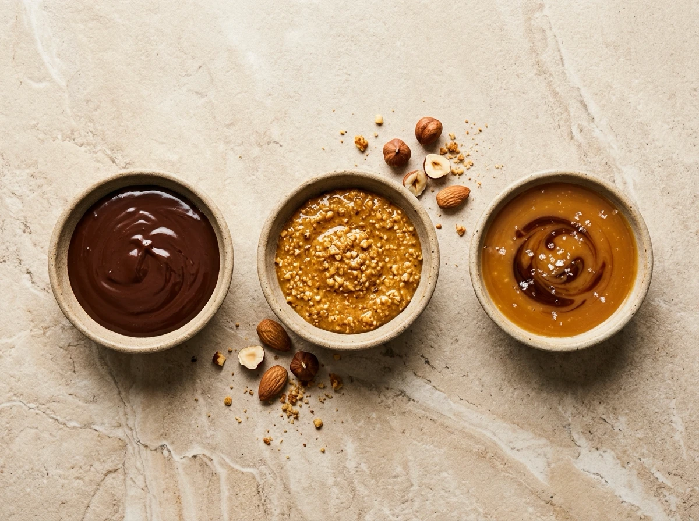
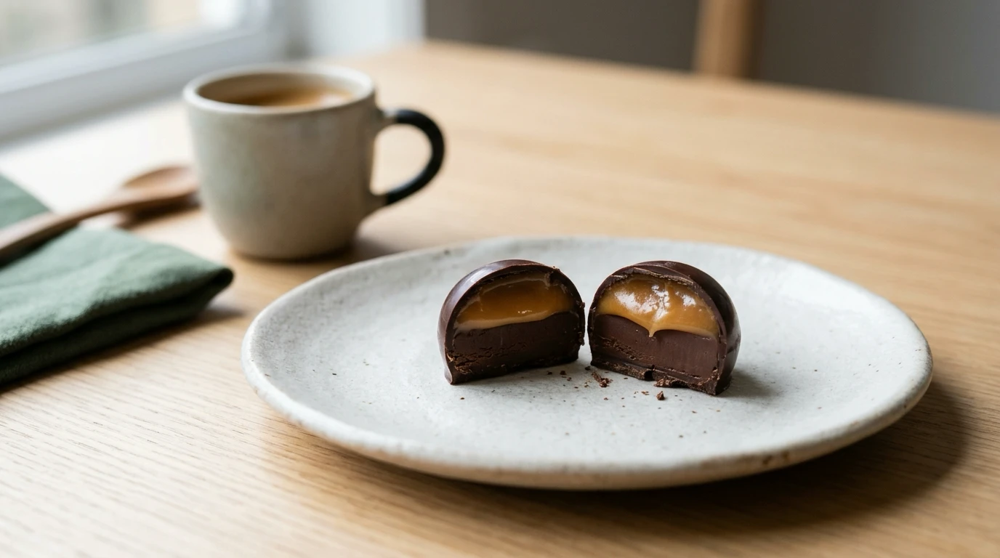

VERYGOOD JOURNAL · FILLED CHOCOLATE & CONFECTIONERY GUIDE
Read the centre as well as the shell. Ganache, praliné and caramel are useful starting points, but one filled chocolate can bring more than one together.
A filled chocolate has two parts to read: the chocolate on the outside and the centre inside.[19] Choosing a dark shell does not settle what the filling will be.[19][21]
Ganache, praliné and caramel are useful names to know. They help you explore flavours and textures, but none is a complete ingredient list.
KEY TAKEAWAY · SHELL VS. CENTRE
Separate shell from filling, read praliné in context and check the maker’s description: ganache, nut paste and caramel are not fixed, mutually exclusive recipes.

Shell outside, filling inside: a hypothetical illustration, not an actual product.
The shell is the chocolate coating around the filling.[19] Neuhaus describes both moulding chocolate into shells and enrobing, where a pre-formed centre receives a chocolate coating.[19] Those are different ways to put an outside around an inside.[19]
When choosing, ask about both. “Dark chocolate” might describe the shell without telling you which filling it surrounds. Read the rest of the description before deciding that you know the centre.
CONFECTIONERY ANATOMY · OUTSIDE SHELL VS. INSIDE CENTRE
MOULDED SHELLS
Tempered chocolate lines a mould first to create a crisp hollow shell before the filling is piped inside and sealed.[19]
ENROBED CENTRES
A firm centre (such as cut ganache, praliné or caramel) is shaped first, then passed through a curtain of chocolate.[19]
Ganache commonly combines chocolate and cream, but that familiar pairing is not the only version.[19] Neuhaus describes ganaches made with chocolate and liquids such as fresh cream, coffee or liquor.[19]
Valrhona explains ganache as an emulsion: a mixture bringing together fat-based and water-based parts.[20] Its examples of water-based ingredients include cream, fruit purée, infusions and water; a well-emulsified ganache is smooth and creamy.[20]
For a reader, the useful distinction is between the chocolate shell and a chocolate-based filling. Ask which chocolate and flavourings are in the ganache, rather than treating the name as one fixed recipe.
In French pastry terminology, praliné is a paste made from nuts and sugar, with caramelised versions bringing the two together before grinding.[18] Valrhona commonly uses hazelnuts and almonds, while its range also includes other nuts.[18]
That makes “which nut?” a useful question. Do not automatically translate every praliné description into “hazelnut”. Nor does the paste name promise a crunchy centre: Valrhona describes grinding and refining the mixture into a fine paste.[18]
There is also a naming wrinkle. Belgian maker Neuhaus uses “praline” for a whole filled chocolate, not just a nut filling.[19] Valrhona distinguishes praliné paste from a sugar-coated candy called praline.[18] Context matters: check whether the word names the centre or the entire confection.

Three filling names to read in context. Illustrative examples, not fixed recipes or actual products.
ILLUSTRATIVE VOCABULARY · NOT FIXED RECIPES OR ALLERGEN GUARANTEES
CHOCOLATE EMULSION
Combines chocolate with liquids such as cream, fruit purée, coffee, infusions or liquor into a smooth emulsion.[19][20]
Check which chocolate and liquid form the centre.
Caramel begins with caramelised sugar.[22] In Callebaut’s Gold Caramel Ganache, the sugar is caramelised before cream, butter and other ingredients join it.[22] That is a particular dairy-containing preparation, not a universal ingredient list for everything called caramel.[22]
The same example also shows why these categories are not watertight: a filling can be both caramel-flavoured and a ganache.[22] Rather than expecting one name to settle everything, look for the description of that specific centre.
You do not always have to choose between categories. Callebaut’s Milk Chocolate, Muscovado & Rum Pralines combine soft caramel and milk-chocolate rum ganache inside a dark chocolate shell.[21] It is a published professional example, not a description of a Very Good Chocolate product.
Use the flavour guide to ask three questions:
FLAVOUR GUIDE · THREE QUESTIONS TO ASK
• Outside: What chocolate forms the shell?
• Inside: Is there one filling or a combination?
• Preference: Which flavours and textures appeal to you?
A filling name is useful vocabulary, not a substitute for the maker’s full description.
INGREDIENT & ALLERGEN CHECK · FSANZ GUIDANCE
If an allergy affects your choice, check the full ingredient and allergen information, or ask the supplier before ordering.[23]

One shell can bring fillings together. Hypothetical illustration; not a Very Good Chocolate product.
VERYGOOD CHOCOLATE · SYDNEY DESSERT COLLECTION
[18] https://www.valrhona.com/en/l-ecole-valrhona/discover-l-ecole-valrhona/chocolate-terminology/praline — Valrhona — Praliné
[19] https://www.neuhauschocolates.com/en_US/neuhaus-lexicon/lexicon.html — Neuhaus — Lexicon
[20] https://www.valrhona.com/en/l-ecole-valrhona/discover-l-ecole-valrhona/chocolate-terminology/chocolate-emulsion — Valrhona — Chocolate emulsion
[21] https://www.callebaut.com/en/recipes/Milk-Chocolate-Muscovado-Rum-Pralines/5238 — Callebaut — Milk Chocolate, Muscovado & Rum Pralines
[22] https://www.callebaut.com/en/recipes/Callebaut%20Gold%20Chocolate%20Caramel%20Ganache/4631 — Callebaut — Gold Caramel Ganache
[23] https://www.foodstandards.gov.au/consumer/labelling/allergen-labelling — FSANZ — Allergen labelling for consumers